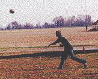
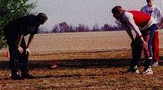
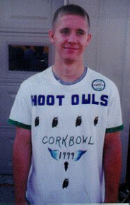
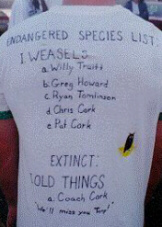
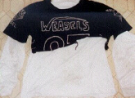
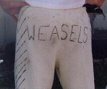
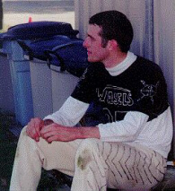
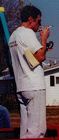

Willy Truitt fires one of his
62 passes on the day. Truitt
completed 35 passes including
17 touchdowns.

Chris Cork and Kirby Newell


Jerseys are always interesting at Cork Bowl, and Cork Bowl 9 was no exception. Josh Williamson shows off his "Hoot Owls" jersey that includes all of the Weasels listed as "Endangered Species". Williamson finished the game with a career high 10 receptions and also had 8 tackles.
At right, Patrick Cork's jersey
didn't quite make it through Cork
Bowl in one piece. It was destroyed
early in the 2nd quarter.


At left, Patrick Cork shows his Weasel pride on his backside while
at right he takes a break at halftime in the cool shade by the
Dawg Pound. Patrick garnered his second straight Cork Bowl MVP
Award this year for his 14 catch/6 touchdown performance on offense.
He also added a game-high 10 tackles and had an interception.
